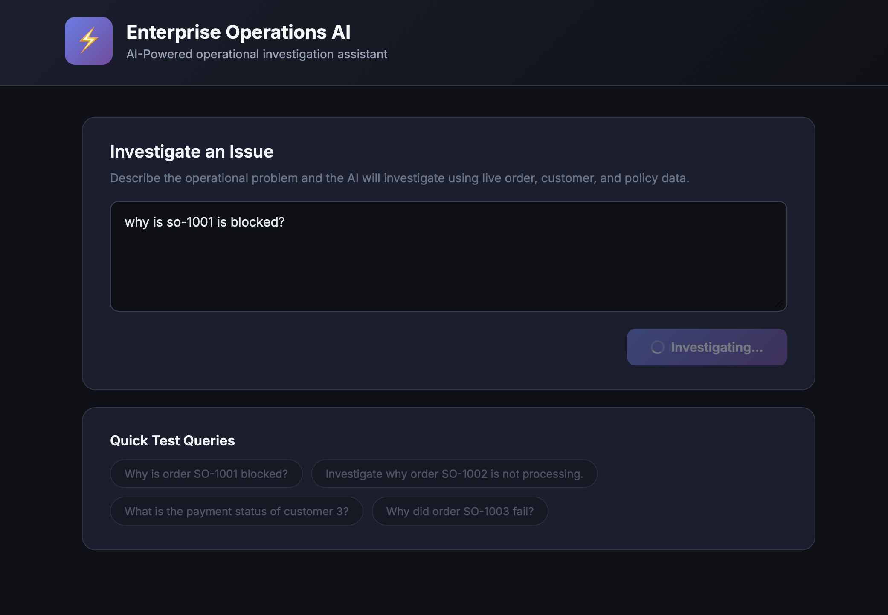
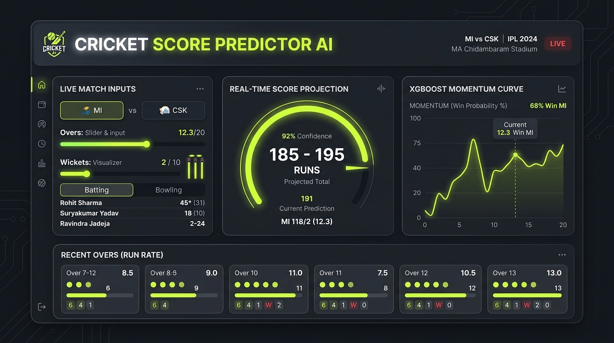
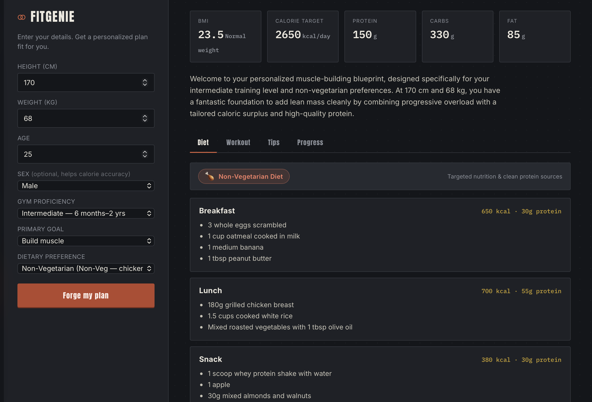

Languages
Python, SQL, JavaScript, TypeScript
Software Engineer [Noida, India]
I’m Suraj Singh, a Software Engineer engineer focused on Artificial Intelligence. I enjoy turning complex product needs into clear, durable experiences.
* Start * Learn * Build * Fail * Repeat
About
I'm a Software Engineer living in Noida, India. I work as a Software Engineer at Capgemini. where I help build innovative solutions. currently Working with PyTorch, RAG, LLM. I'm interested in the gap between a model that works in production data pipelines, evaluation, latency, and failure modes included.
I focus on making models measurable before I call them done clear eval metrics, reproducible experiments, and monitoring once something ships.
Capabilities
Python, SQL, JavaScript, TypeScript
HTML5, CSS3, JavaScript, React, Data Visualization
FastAPI, Flask, Node.js, API Integration, Backend Automation
AWS, Docker, Git, Github, Lambda, Cloud Deployment
MySQL, PostgreSQL, MongoDB, Data Processing
Pandas, NumPy, Sckit-learn, TensorFlow, PyTorch, OpenAI APIs, Gemini API, Power BI, VS Code, Cursor
Experience
Capgemini
MNG Realtech
Selected work

Project 01
An agentic AI assistant that investigates enterprise operational issues such as blocked orders, payment failures, credit-limit violations, and inventory problems by reasoning over business data and company policies.
Problem: Enterprise operations teams often spend significant time manually checking orders, customer information, payment history, and business policies to identify why an order is blocked. This project automates the investigation process while keeping the reasoning explainable and evidence-based.
Technical decisions & challenges: Built a Python/FastAPI backend with SQLite and SQLAlchemy, integrating Gemini for AI reasoning and function/tool calling. Designed modular tools for retrieving orders, customer information, payment history, and company policies. The main challenge was creating a controlled workflow where the AI can decide which tools to use without inventing enterprise data.
Outcome: Built a working foundation for an agentic enterprise investigation system that can retrieve real database information, analyze operational issues, identify potential root causes, and provide evidence-based recommendations. The architecture is designed to evolve towards LangGraph workflows and human-approved business actions.
Tech: Python, Gemini API, FastAPI, SQLAlchemy, SQLite Tool Calling, React

Project 02
Summary: A machine learning web app that predicts the final score of an IPL first innings in real time, based on the current match state — Batting team, Bowling team, Runs scored, Wickets lost, Overs left, and momentum in the last 5 overs.
Problem: Fans, analysts, and commentators constantly estimate where an innings will finish, but that guesswork is usually gut-feel rather than data-driven. This project turns live match variables into a statistically grounded score projection updated dynamically as the innings unfolds.
Technical decisions & challenges: Built a Python backend using Flask/FastAPI, with an XGBoost regression model trained on historical IPL ball-by-ball data. Engineered features capturing mid-innings momentum without overfitting to any single team or venue, maintaining stable predictions early in match play.
Outcome: Built and deployed a live predictor service that delivers projected final scores with robust accuracy across diverse match situations.
Tech: Python, Scikit-Learn, XGBoost, Flask, FastAPI, Pandas, NumPy, React

Project 03
Summary: An AI-powered personalized fitness web app that generates tailored workout and nutrition guidance based on user's profile including age, height, weight, fitness level, goal, and dietary preferences while also helping users track their progress and stay motivated.
Problem: Most fitness plans follow a one-size-fits-all approach and don't adapt to an individual's goals, fitness level, or dietary prefernces. FitGenie turns personal fitness information into actionable workout plans and fitness guidance through an interactive AI-powered experience.
Technical decisions & challenges: Built a responsive full-stack web application using React and Python, integrating AI/API capabilities to generate personalized fitness recommendations. Engineered structured prompts and user inputs to produce relevant workout, nutrition, and fitness guidance while keeping the experience simple and interactive. Added weight progress loging with measurements, dates, and notes to help users monitor their progress over time.
Outcome: Built and deployed a live AI-powered fitness assistant that delivers personalized workout and nutrition recommendations, fitness tips, and progress tracking through a single web application.
Tech: Python, React, AI/API Integration, Prompt Engineering, Vercel, Full-Stack Development
Education
Bachelors in Technology (CSE AI Honours)
Noida Institute Of Engineering And Technology, Gr. Noida• 2020-2024